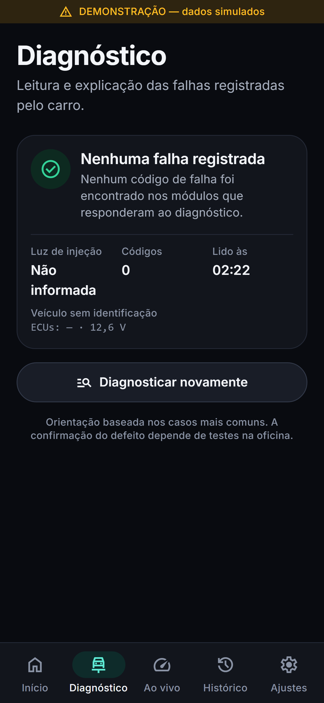
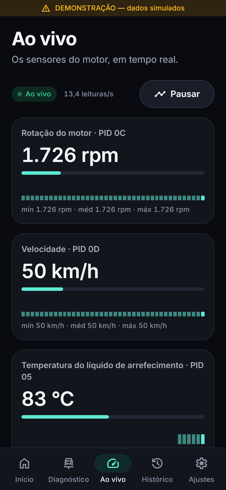
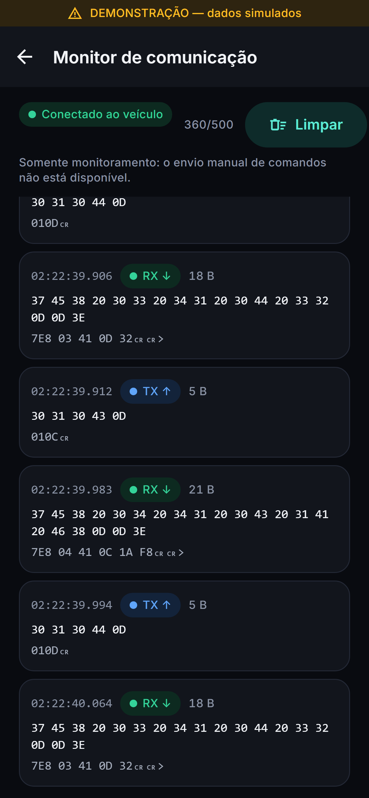
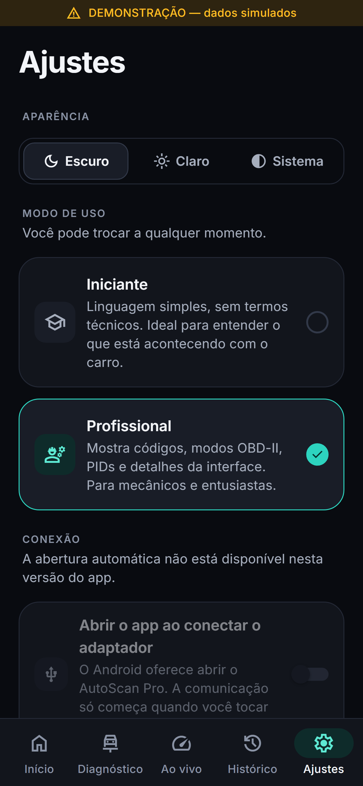

Diagnóstico que fala a sua língua
Lê os códigos atuais, pendentes e permanentes de cada módulo e explica o que significam, as causas mais comuns e o que verificar.
Evite dirigirProcure uma oficina logoAgende uma revisãoPode aguardar
Plugue um adaptador ELM327 USB no celular e o AutoScan Pro lê as falhas, explica cada uma em português e mostra o motor por dentro, ao vivo.
Linguagem clara no modo Iniciante. Códigos, PIDs e cada byte trocado com o adaptador no modo Profissional.




Telas reais do app, capturadas no modo demonstração. Os valores mostrados são simulados.
Lê os códigos atuais, pendentes e permanentes de cada módulo e explica o que significam, as causas mais comuns e o que verificar.
Rotação, temperatura, sondas, pressão e muito mais, com mini gráficos e alertas. A leitura se adapta ao que o seu carro informa.
Cada diagnóstico é salvo e agrupado pelo chassi, para comparar com o anterior.
Compartilhe com a oficina ou com o comprador do carro. O chassi sai mascarado por padrão.
Limpar códigos exige confirmação, botão pressionado por 2 segundos e motor desligado.
Encaixe o adaptador ELM327 USB na tomada OBD-II do carro e, pelo cabo OTG, no celular.
Um toque em Conectar: o app acha a velocidade certa, prepara o adaptador e identifica o protocolo do carro.
Veja o diagnóstico em linguagem simples, acompanhe os sensores e salve tudo no histórico.
Sem cadastro, sem servidor, sem anúncios. O AutoScan Pro não envia nada pela internet.
Android 7.0 ou mais recente, com USB OTG, e um cabo ou adaptador OTG.
Validado em hardware real com chip CH340. Também traz drivers para os chips abaixo. Bluetooth e Wi-Fi não são suportados.
No Brasil, a maioria dos veículos fabricados a partir de 2010 (padrão OBDBr-2).
Há muitos adaptadores "compatíveis com ELM327" no mercado, e nem todos funcionam igual; não há garantia de funcionamento com todos os adaptadores e veículos. As explicações do app são orientações baseadas nos casos mais comuns e não substituem a avaliação de um profissional. Use com o veículo parado.
Chega em breve na Google Play.